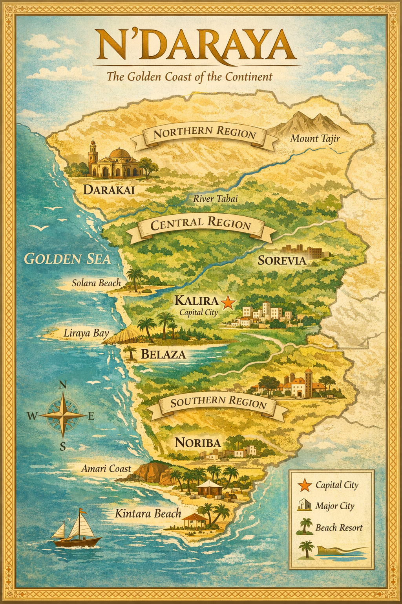

Dernières actualités

Le dernier blocage du détroit d'Ormuz après l'offensive israélo-américaine crée un séisme dans le commerce mondial. L'Asie est le continent le plus impacté par ce blocage, car 90 % du gaz qui y transite leur est destiné. Il permet également aux pays d'accéder à leurs bases militaires, comme celles des États-Unis.
L'Iran ne peut pas gagner cette guerre, c'est ainsi qu'il décide d'utiliser le détroit comme arme de guerre pour provoquer une flambée du prix du pétrole, ce qui mènerait à une récession mondiale. Si des pays comme la France ont des stocks de pétrole, les stocks de gaz sont particulièrement bas (moins de 30 % de stocks de gaz en Europe). Si le détroit d'Ormuz reste bloqué longtemps, cela pourrait augmenter les prix du gaz et créer une vraie crise économique
N'Daraya 📖

N'daraya est une tragédie historique et littéraire se déroulant dans la nation fictive de N'Daraya, inspirée de l'Afrique de l'Est, pendant et après une guerre civile brutale opposant le Nord, d'influence arabo-musulmane, et le Sud, chrétien et autochtone. L'histoire suit Nirmala Taralek, une jeune femme belle, téméraire et magnétique issue d'une riche famille du Nord, et Jasiri, un garçon mystérieux et silencieux qui arrive dans son village à moitié mort et sans aucun souvenir de ses origines.